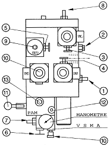
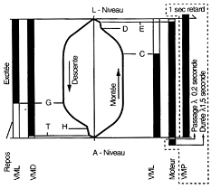

GMV

_________________________________

| Vis de pression de sécurité |
|
| Vis de petite vitesse(D-E Montée H-I Descente) |
|
| Vis de décélération(CD Montée GH Descente) |
|
| Vis d'accélération en montée |
|
| Vis d'essai de la valve parachute |
|
| Robinet d'isolement du manomètre | |
| Réglage pression sur piston (2/1 mouflé) | |
| Vis de grande vitesse |
|
| Réglage Vitesse Descente |
|
| Manoeuvre Secours Descente | |
| Manoeuvre Secours Montée | |
| Vis Purge PAM | |
| Vis réglage pression pompe à main |
_________________________________
| Vanne Anti-retour | |
| Vanne régulatrice d'équilibrage | |
| Electrovanne de nivelage | |
| Electrovanne de descente | |
| Vanne de sécurité | |
| Vanne régulatrice de débit | |
| Vanne anti-retour | |
| Valve régulatrice de débit parallèle | |
| Valve de pression | |
| Electrovanne démarrage étoile-triangle | |
| Valve manuelle anti-descente du piston |
GMV